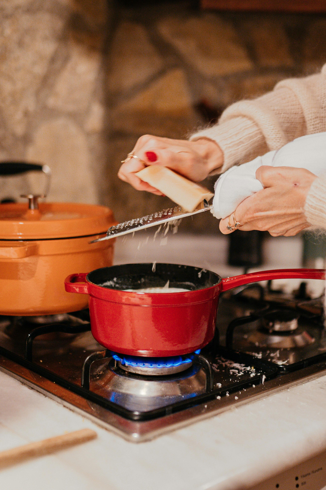
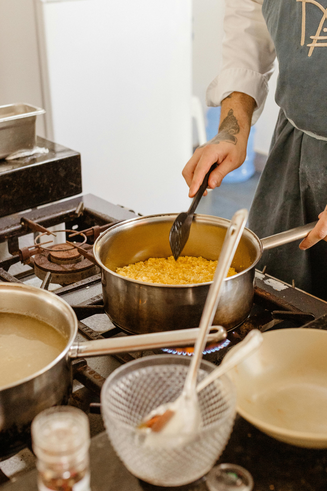
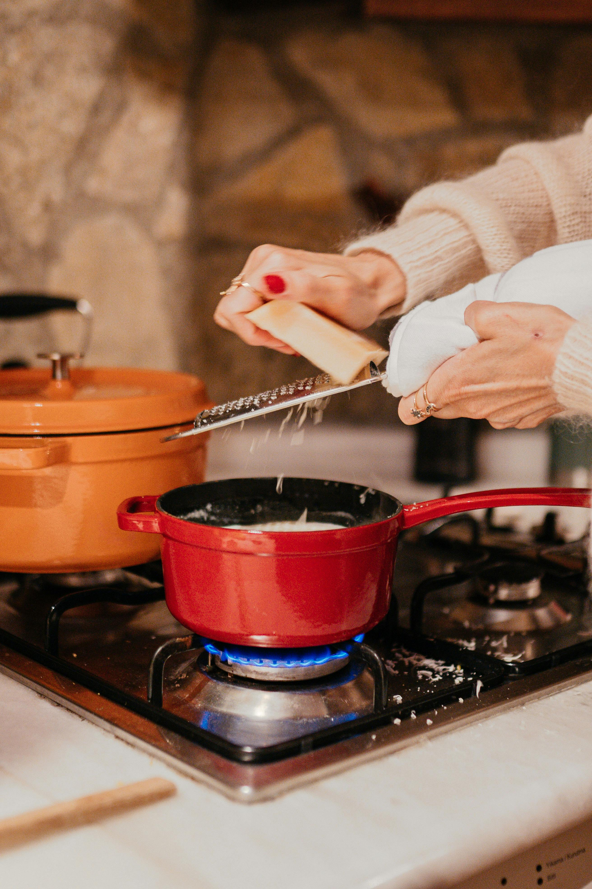
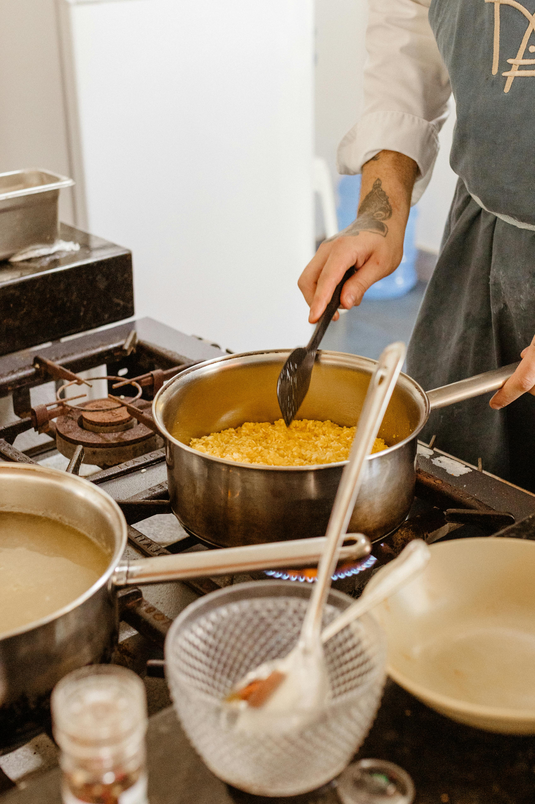

Risotto con queso

Ingredientes (para 4 personas)
- 1 cebolla
- 1 diente de ajo
- 300 g de arroz arborio o carnaroli (especial para risotto)
- 100 ml de vino blanco
- 1.2 l de caldo de verduras
- 60 g de queso emmental
- 60 g de queso gruyère
- 50 g de queso de cabra (no rulo)
- 50 g de queso gorgonzola
- 10 ml de mostaza a la antigua
- 50 g de mantequilla
- 10 ml de aceite de oliva virgen extra
Lejos de lo que muchos puedan pensar, hacer un buen risotto es sencillo. Eso sí, una fina línea separa el éxito de plato tradicional italiano del fracaso. Es importante no tener prisa a la hora de cocinarlo y respetar cada paso del proceso. Hace poco os dimos las claves para que salga perfecto, hoy venimos con esta receta de risotto a los cuatro quesos.
Calentamos el caldo en una olla tapada y dejamos el fuego al mínimo para que se mantenga caliente durante todo el proceso. Mientras tanto, pelamos y picamos finamente el diente de ajo y la cebolla. Calentamos el aceite con la mitad de la mantequilla en una cacerola y pochamos, con un poco de sal, a fuego suave durante unos 12-14 minutos o hasta que estén traslúcidos, pero sin dorar.
Añadimos el arroz con otro pellizco de sal, subimos un poco el fuego y rehogamos un par de minutos sin parar de remover. Regamos con el vino y seguimos removiendo hasta que se evapore el alcohol. A continuación bajamos el fuego y empezamos a añadir el caldo caliente, poco a poco y a medida que lo absorba el arroz, removiendo constantemente.
El proceso es contrario al de los arroces secos españoles, en este caso queremos que el arroz suelte su almidón y, para ello, es necesario removerlo al tiempo que añadimos el caldo. A los 10 minutos añadimos también el queso emmental, el gruyère y el de cabra, rallados o en dados. En un par de minutos se habrán fundido y será el momento de añadir el gorgonzola.
Continuamos removiendo y añadiendo caldo hasta que el arroz esté en su punto, lo que suele llevar 15 minutos de cocción. Tiene que verse más líquido que seco. Apagamos el fuego, incorporamos el resto de la mantequilla, removemos bien y ajustamos el punto de sazón si fuera necesario. Dejamos reposar cinco minutos, con la tapadera puesta, y servimos de inmediato.
 


